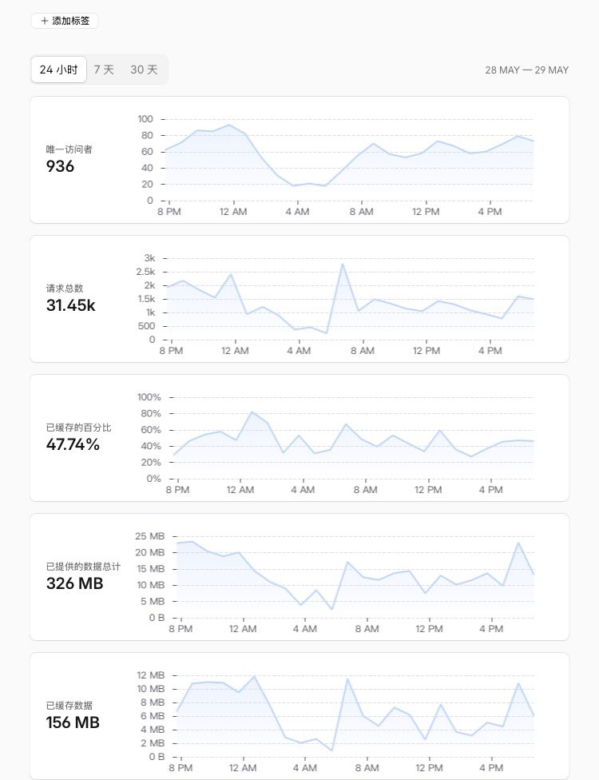

你想表达什么，刚出炉的项目访问量必然会突飞猛进的增长，而我这一个稳定运行了将近半年的项目仍然能做到日活用户量近千
而你光看访问量有什么意思，就我测试那几下就访问了几十次，如果我一个人访问一万次，那你就要说有一万个人在用你的网站吗？要看有多少人在用，你需要给出的是独立访问者，如果这点都不明白说明你的确是个外行
再者，我的用户遇到的任何问题只要我看到了我都会尽快解决，而不是“好了好了紧急发布了修复”，“这里没你什么事了”这样的态度
而你光看访问量有什么意思，就我测试那几下就访问了几十次，如果我一个人访问一万次，那你就要说有一万个人在用你的网站吗？要看有多少人在用，你需要给出的是独立访问者，如果这点都不明白说明你的确是个外行
再者，我的用户遇到的任何问题只要我看到了我都会尽快解决，而不是“好了好了紧急发布了修复”，“这里没你什么事了”这样的态度
